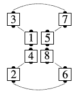
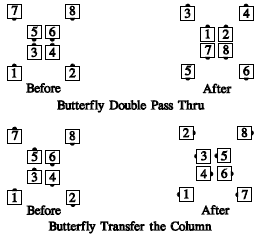

From a butterfly: All dancers move forward one position along the path below:

Other Butterfly calls, such as Split Circulate, Walk and Dodge: Any call which can be done from parallel general columns (columns, double pass thru, etc.), and which ends in general lines or columns, can be done from a butterfly. The dancers act as though the ends were close together; however, they end on the original 8 spots on the floor. For example, "Butterfly Double Pass Thru":

The ending formation is always the same as though the ends stepped together, everyone did the call, and the ends slid apart again--the same eight spots on the floor are occupied at the end of the call as when it began.